- 一.目录规范(正规项目的SVN目录结构一般有3个文件夹)
1.truck:主干,当前开发的主项目,一般公司里进行开发的时候都是在主干里进行的
2.branches:分支目录,添加非主线的功能的时候使用,开发测试之后合并到主项目中,在特殊情况下产生,一般产生重大bug的时候才会产生分支
3.tags:标记目录,通常作为重大版本的备份,比如开发了1.0,2.0版本后,都会对这个版本进行备份,备份的时候就备份到tags里面
- 二.举例说明SVN目录的使用
1.一般一个项目在开发的时都是在主干里进行开发的
2.当1.0版本开发完毕后发布到AppStore供用户使用
3.这时候会对1.0版本进行备份,将1.0版本备份到tags目录下
4.如果反馈良好则会在1.0基础上继续开发2.0版本,开发依旧在主干里进行
5.假如在2.0开发的过程中,2.0版本并没有开发完毕,这个时候突然接到反馈,1.0版本有重大bug,必须修复
6.主干中修复的话,修复完肯定要上传AppStore供用户使用,2.0新功能并不完善,不完善的功能发布会造成很大的隐患
7.修复bug操作一般在分支目录中进行,分支目录从tags目录将1.0项目拷贝过来后进行修改
8.修改完后为1.1版本,之后需要做4件事
1.将修改好的1.1版本上传到AppStore供用户使用
2.将修改好的1.1版本备份到tags中,因为也是个重大的版本
3.将修改好的1.1版本与主干正在开发2.0的项目进项合并,因为2.0项目从1.0过来的也有bug
4.将分支目录下的项目删除,修复完bug后,也备份过了就不需要该项目了
- 三.在svn服务器内创建符合规范的代码仓库
1.新建微博代码仓库选择创建后生成三个文件夹
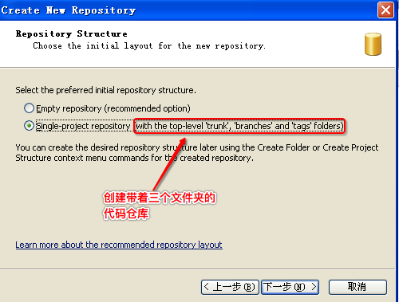2.默认情况下不允许任何人访问
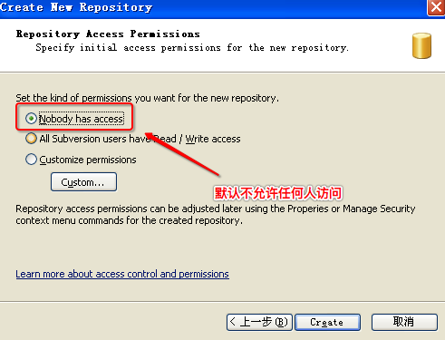3.创建后默认显示如下三个文件夹
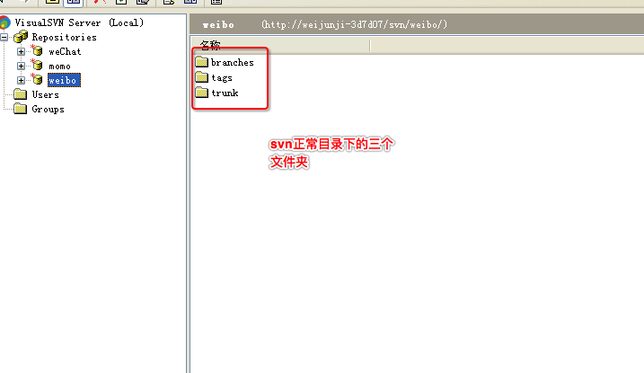4.指定微信组的所有人可以访问微博

- 四.项目经理使用cornerstone初始化微博项目
1.添加项目经理的远程服务器连接
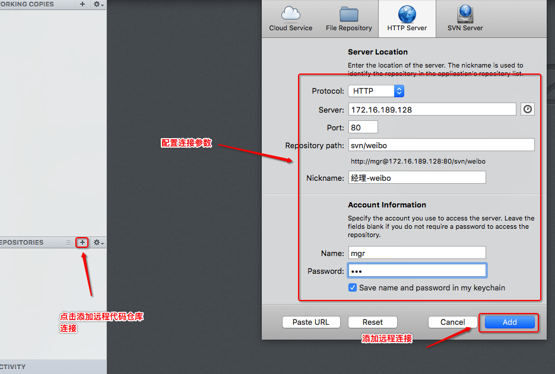2.点击checkout将服务器中trunk(主干)内的所有内容下载到本地

3.项目经理创建微博项目到svn的工作目录下

4.删除忽略文件
1.使用cornerstone点击commit提交本地所有的内容到服务器中
1.提交的时候先忽略cornerstone检测到忽略的内容

2.提交所有内容
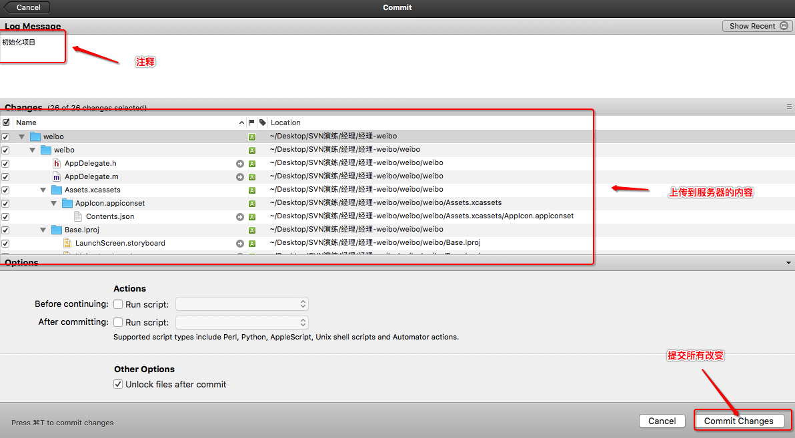 2.右键删除需要忽略的文件夹(两个xcuserdata)
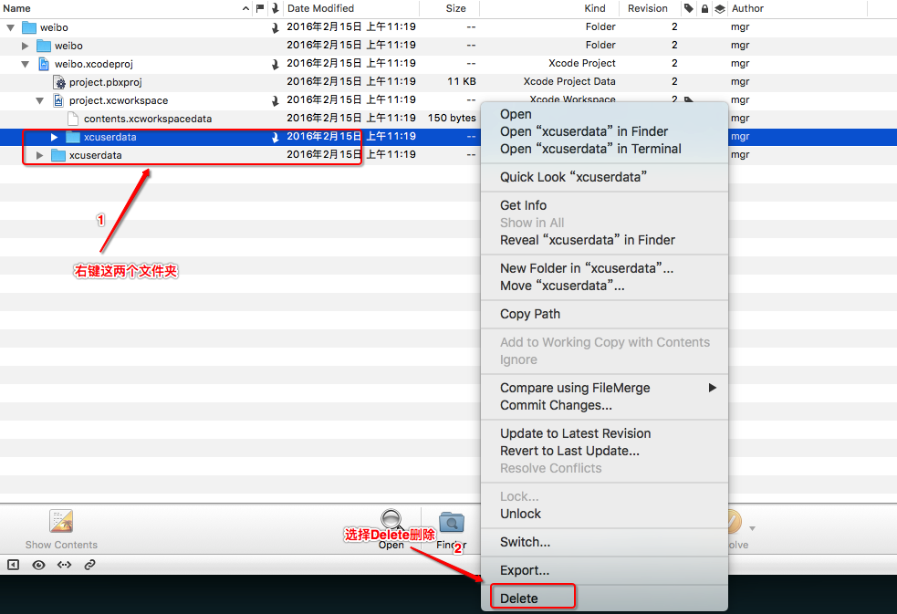 删除后的状态为
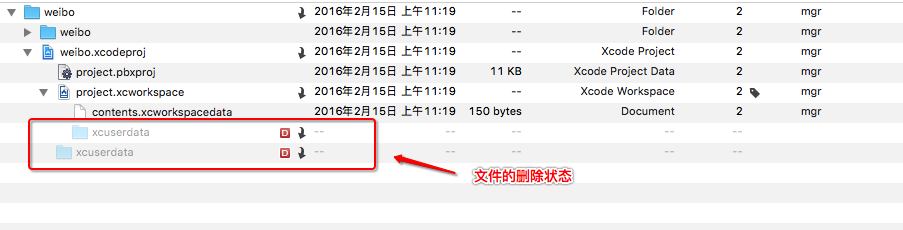 3.将删除操作提交到服务器
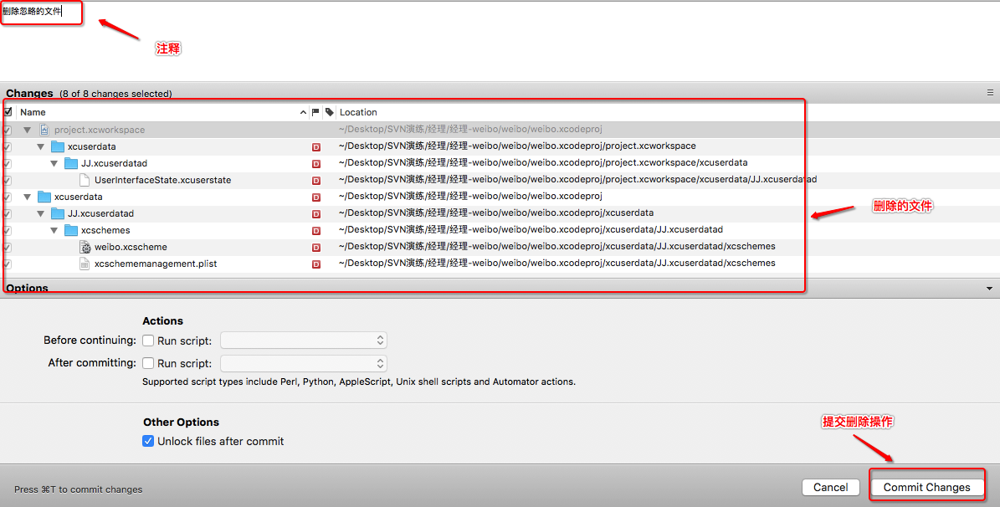 4.修改代码,以产生需要忽略的文件
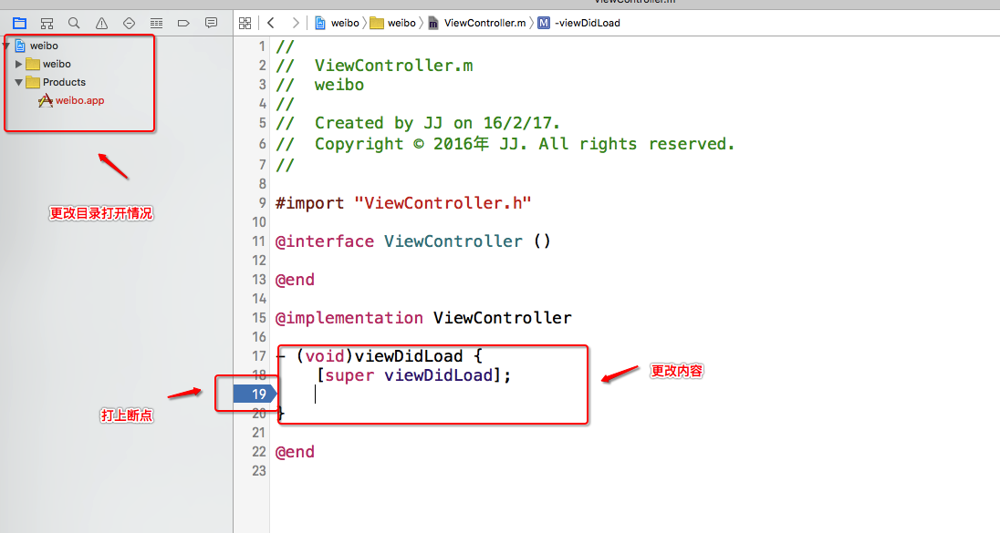 5.右键需要忽略的文件(两个xcuserdata,这个时候状态为?)选择ignore进行忽略
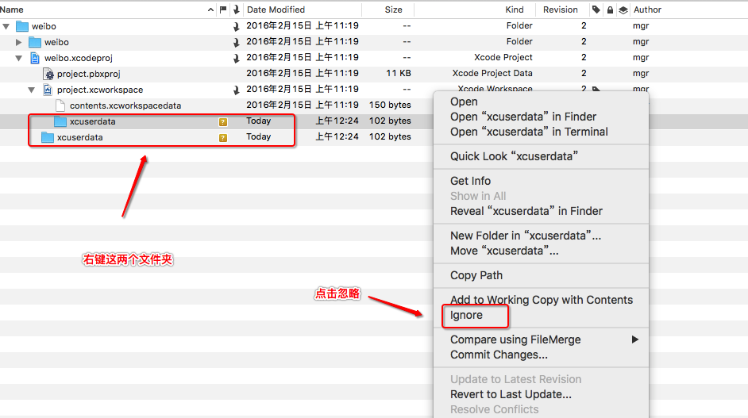 6.在cornerstone做一次更新操作(点击update),配置文件被修改需要先更新
7.将忽略操作提交到服务器

- 五.项目经理开发
1.在viewcontroller中打印"进行1.0版本开发"表示正在开发1.0版本,之后提交到服务器(Source Control -> Commit)

2.在viewcontroller中打印"1.0版本已经开发完毕",代表已经完成了1.0版本开发

3.使用cornerstone对1.0版本进行备份
1.选中远程仓库中的项目右键选择tag
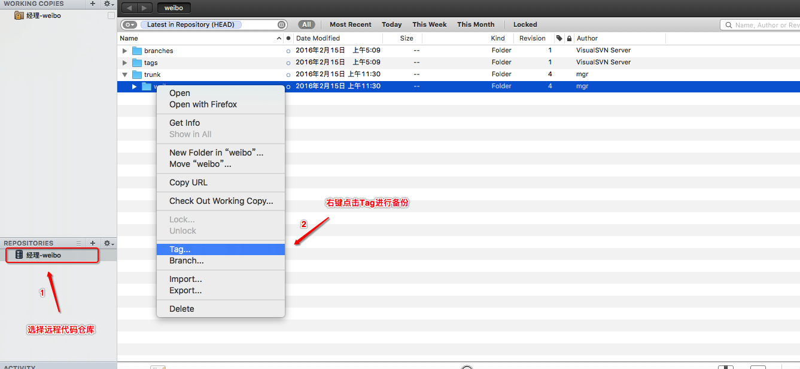 2.填入信息,备份的项目名,与存放的位置放在服务器tags目录下
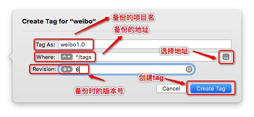

3.添加备份的版本的功能描述

4.备份后则显示在tags目录下
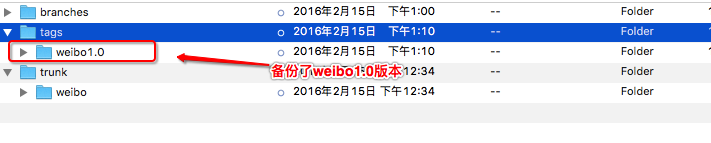4.在viewcontroller中打印"着手进行2.0版本的开发",代表正在开发2.0版本,之后提交到服务器

5.突然收到反馈微博1.0版本有bug,必须修复bug,这个时候则通过分支去修复bug,从tags目录下降weibo1.0拷贝到分支目录下
1.右键tags目录下的weibo1.0选择branches(分支)

2.填入信息,保存的项目名,与存放的位置放在服务器branches目录下
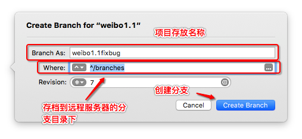 3.在分支中创建该文件的原因
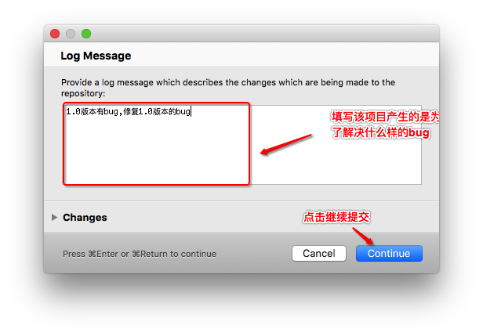 4.创建后显示在分支目录下

6.从服务器将分支下的weibo1.1fixbug checkout到经理的文件夹下

7.打开weibo1.1fixbug的项目,添加一个方法来表示已经修复了bug,并将修复完的代码提交到服务器
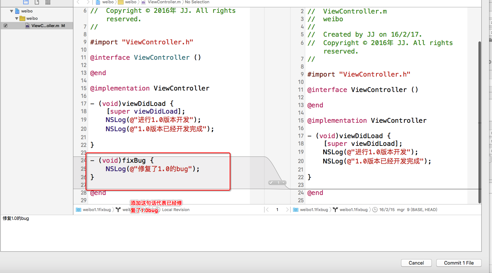8.对weibo1.1fixbug进行备份,复制一份到tags目录下
1.右键weibo1.1fixbug选择Tag
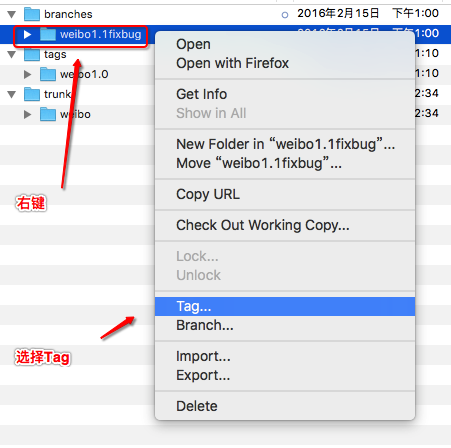 2.填写备份文件名

3.填写该版本的功能介绍

4.在tags目录下就多了个weibo1.1
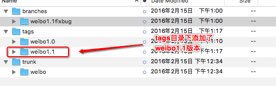9.将本地正在开发的2.0版本与分支内修复的代码进行合并
1.选择本地代码库,点击merge(合并)

2.由于备份提交在服务器进行了多次操作,服务器的版本号增加了,合并时本地版本号不能低于服务器版本号,先进行更新

3.选择从服务器分支的weibo1.1fixbug中进行合并

4.看到如下界面说明合并操作可以完成
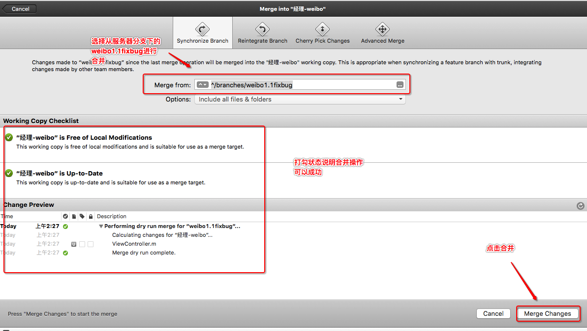10.将合并的代码提交到服务器

11.分支的weibo1.1fixbug,已经备份过,不需要了右键从服务器删除
- 六.总结
1.目录规范:在实际开发中都会有truck(主干),branches(分支),tags(标记),这三个文件夹,并且一般是由项目经理来操作这三个文件夹
2.掌握着三个文件夹的主要作用
truck:正在开发的项目都是主干进行的,比如开发1.0版本,2.0版本
branches:一般当产生重大bug的时候产生,或者是尝试实现一个难度较高的功能
tags:只要发布了重大版本都要进行备份